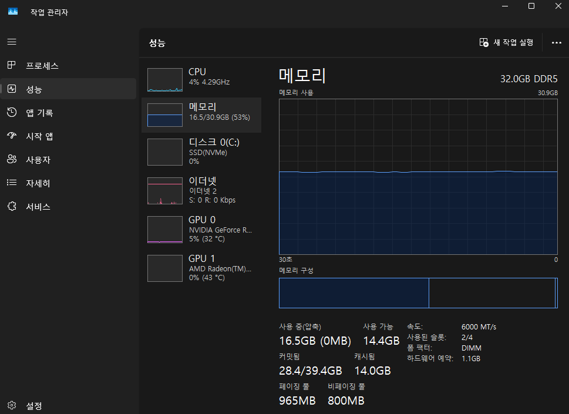
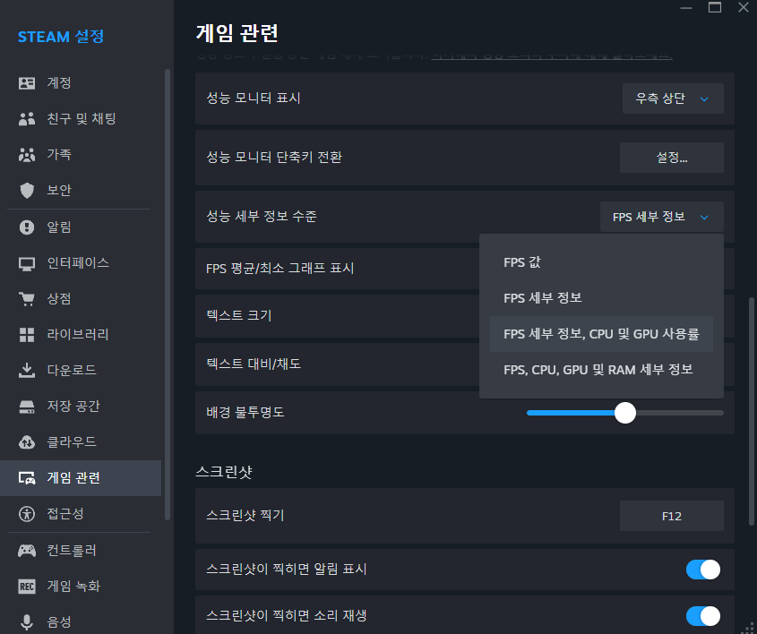
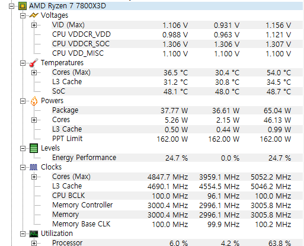
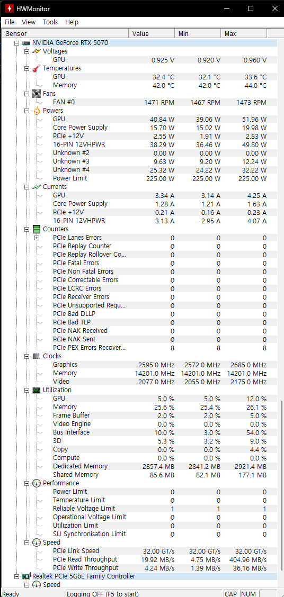
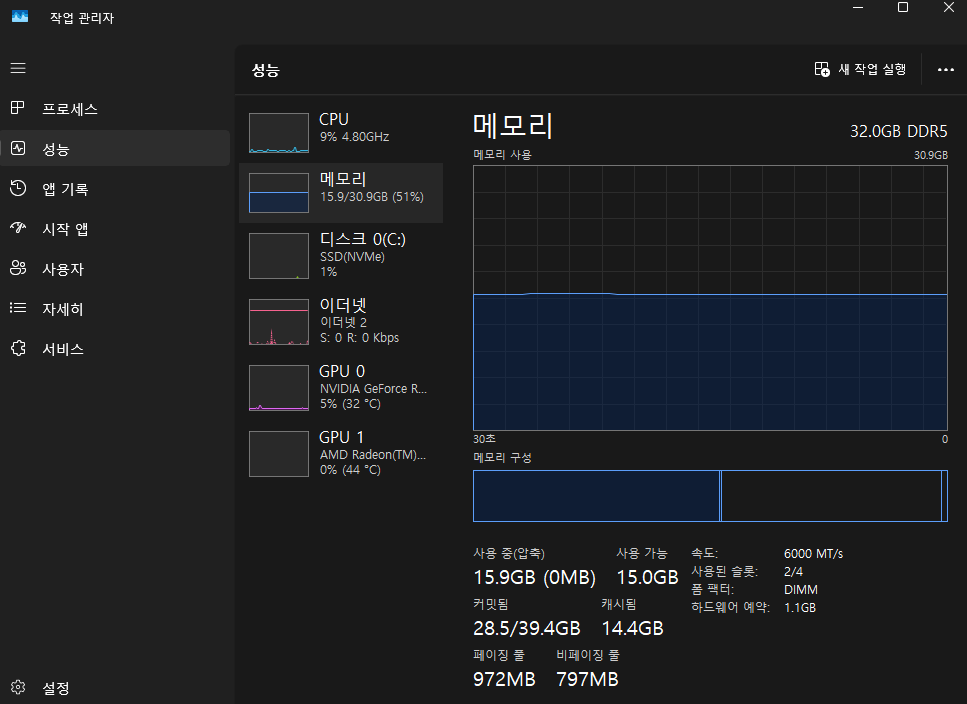

프레임드랍 원인 자가진단법

혹시 게임할 때 프레임이 갑자기 뚝뚝 떨어지는데, PC에 문제가 있는 것 같긴 한데 정확히 뭐가 문제인지는 모르겠고, 별거 아닐 수도 있는데 대뜸 수리점부터 가기엔 부담스러우신가요? 그렇다면 이 자가진단법이 도움이 될 거예요.
특별한 지식 없이 간단한 무료 프로그램만 따라서 켜보면 됩니다. 다만 변수는 늘 존재하고, 특히 소프트웨어가 아니라 하드웨어 자체의 문제라면 결국 전문가에게 맡기는 게 나을 수 있다는 점은 미리 알아두세요.
① 평소 하시는 게임을 켠 상태에서 리소스 사용률부터 확인하세요.
- Ctrl+Shift+Esc로 작업 관리자를 열고 "성능" 탭에서 확인
- 스팀 게임이라면 스팀 창 좌측 상단 "Steam" 클릭 → 설정 → 게임 관련 → 오버레이 성능 모니터 항목에서 "성능 세부 정보 수준"을 바꾸면 게임 화면 위에 바로 표시할 수도 있습니다


아래 중 사용률이 유난히 과한 부분이 있는지 확인하세요 — CPU 사용률이 100%를 찍는다, CPU 클럭이 비정상적으로 뚝뚝 떨어진다, RAM이 거의 100% 사용 중이다, 그래픽카드(GPU) 로드율이 계속 100%에서 안 내려온다. 참고로 인터넷이 불안정해서 끊기는 것도 프레임드랍처럼 느껴질 수 있으니, 가능하면 유선 연결 상태에서 확인하거나 핑(지연시간)도 함께 체크해보세요.
리소스를 체크하는 김에 하나 더 — 디스코드 인게임 오버레이나 Xbox Game Bar 같은 백그라운드 오버레이가 켜져 있으면, 특히 사양이 낮은 PC에서는 그 자체로 프레임드랍의 원인이 될 수 있습니다. 평소에 잘 안 쓰신다면 꺼두는 것도 확인해보세요.
- 디스코드: 좌측 하단 톱니바퀴(사용자 설정) → "게임 오버레이" → "활성화" 스위치를 꺼짐으로 변경
- Xbox Game Bar: 윈도우 키 → "설정" 실행 → "게임" → "Xbox Game Bar" → "Xbox Game Bar를 사용하여 게임 클립, 스크린샷 및 방송 녹화" 스위치를 꺼짐으로 변경
② 과부하가 걸리는 부품(CPU, GPU 등)의 사양 자체가 지금 하시는 게임·프로그램의 권장 사양보다 너무 부족하지는 않은지부터 확인하세요. 권장 사양보다 한참 낮다면, 아래 방법들은 참고만 하시고 근본적으로는 부품 업그레이드가 필요할 수 있습니다.
③ CPU 문제가 의심된다면 온도를 확인하세요.
- HWMonitor(cpuid.com/softwares/hwmonitor.html에서 무료 다운로드)를 설치하고, 게임을 하거나 무거운 프로그램을 쓰는 동안 CPU 온도를 확인
- 보통 80도 후반~90도를 넘어간다면 CPU 쪽 문제일 가능성이 있습니다
- 써멀구리스를 재도포하거나, 최근에 조립했거나 직접 조립하신 경우라면 CPU 쿨러가 제대로 밀착되지 않았을 가능성도 확인해보세요

온도가 높다는 게 정확히 몇 도부터인지 기준이 필요하시다면, 인텔·라이젠(non-X3D)·라이젠 X3D별로 정리해둔 아래 팁을 참고하세요. 부품별 적정 온도 기준표 보기
④ GPU 문제가 의심된다면 마찬가지로 온도부터 확인하세요.
- HWMonitor로 그래픽카드 온도 확인
- 온도가 너무 높다면 그래픽카드 자체의 써멀 재도포가 필요할 수 있지만, 개인이 직접 하기는 어려우니 AS를 받는 걸 추천합니다
- 온도는 정상인데 GPU가 의심된다면 그래픽 드라이버를 업데이트해보세요 — 특히 최근에 출시된 그래픽카드일수록 드라이버 업데이트로 해결되는 경우가 많습니다
다만 번거로운 조치를 하기 전에, 그래픽카드를 한번 탈거했다가 다시 꽂아보는 것도 꼭 해보세요 — 단순 접촉 불량인 경우도 은근히 많습니다.

GPU도 마찬가지로 "너무 높다"의 기준이 궁금하시다면, NVIDIA·AMD별 정상 범위를 정리해둔 아래 팁을 참고하세요. 부품별 적정 온도 기준표 보기
⑤ RAM(메모리) 문제가 의심된다면 실제로 맞춘 사양대로 인식되고 있는지 확인하세요.
- 작업 관리자 > 성능 > 메모리에서 용량이 실제 구매한 만큼 나오는지 확인
- 4슬롯 메인보드라면 "사용된 슬롯"이 꽂은 개수만큼(예: 2/4) 나오는지 확인
- XMP·EXPO 튜닝 메모리를 쓰신다면 "속도"도 원래 스펙대로 나오는지 함께 확인
평소 블랙스크린으로 갑자기 꺼지는 증상이 자주 있었다면, 메모리 불량일 가능성도 의심해볼 만합니다.

혹시 그냥 램 용량 자체가 부족하신가요? 위 방법으로는 해결이 안 되고, 램 가격 때문에 당장 추가 구매도 부담스럽다면 아래 팁을 참고하세요. 램 용량 부족 응급처치 보기
⑥ 특정 부품이 아니라 전체적으로 온도가 다 높게 나온다면, 시스템 크기에 비해 케이스가 너무 작거나, 케이스 팬이 불량이거나 제대로 연결이 안 됐을 가능성도 확인해보면 좋습니다.
⑦ 여기까지 해봐도 원인을 못 찾겠다면, 수리점에 한번 들러보는 것도 추천합니다. 특히 파워서플라이나 메인보드 문제는 전문 지식이 없으면 직접 확인할 방법이 마땅치 않은 경우가 많습니다.